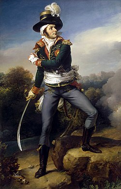

François Athanase Charette de La Contrie (1763-1796), plus connu sous le nom de François Charette, fut l’un des principaux chefs militaires des "guerres de Vendée", conflit majeur de la Révolution française opposant les insurgés vendéens aux armées de la République.
Officier de marine à l’origine, il devient en 1793 l’un des chefs les plus emblématiques de l’Armée catholique et royale.
Dans l’Ouest de la France, il organise et dirige une résistance armée composée principalement de paysans, d’artisans et de nobles locaux attachés à la religion catholique et à la monarchie.
Charette se distingue par sa capacité à mener une guerre de mouvement, utilisant la connaissance du terrain et la mobilité pour résister aux forces républicaines bien plus nombreuses.
Après plusieurs années de combats et de résistance, François Charette est capturé en mars 1796 par les forces républicaines.
Il est fusillé à Nantes le 29 mars 1796.
« Combattu souvent, battu parfois, abattu jamais. » François Athanase Charette de La Contrie.
Source de l'image : Paulin Guérin, (Portrait de François Athanase Charette de La Contrie), 1819 - Wikimedia Commons / Musée d’Art et d’Histoire de Cholet.